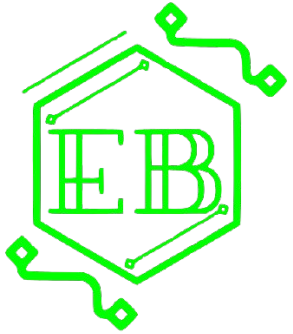
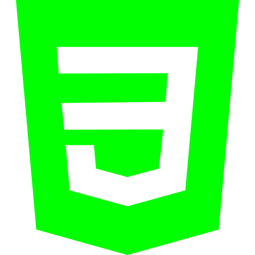
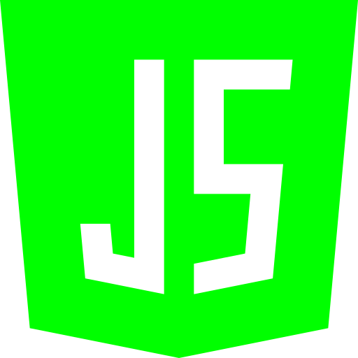
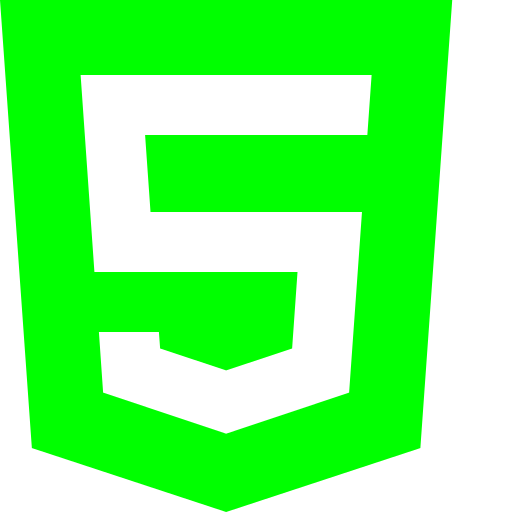
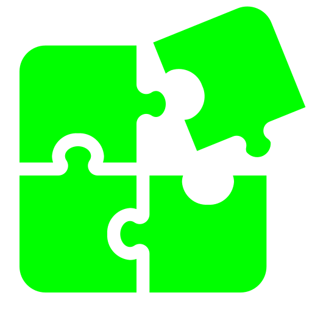
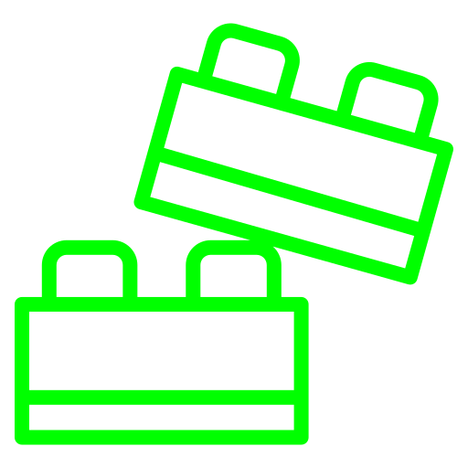
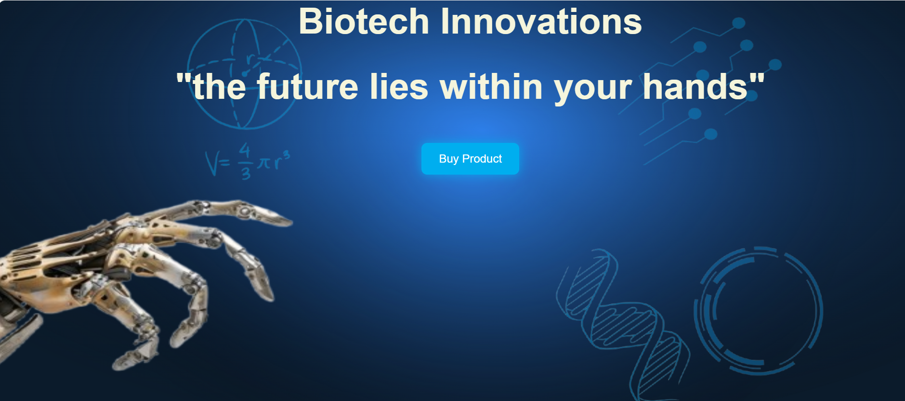
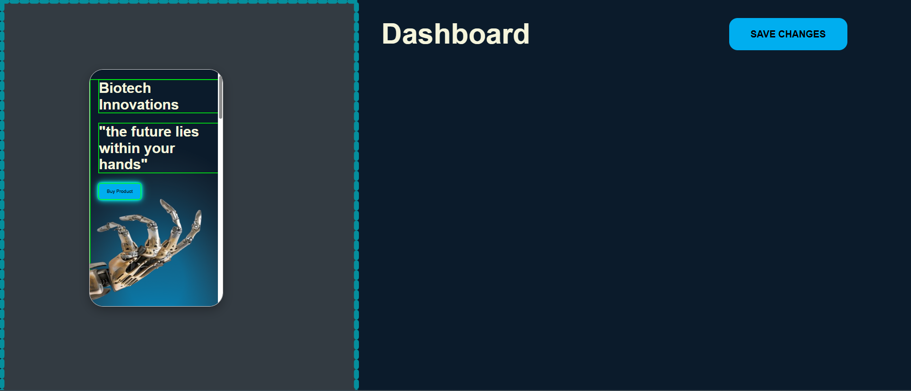
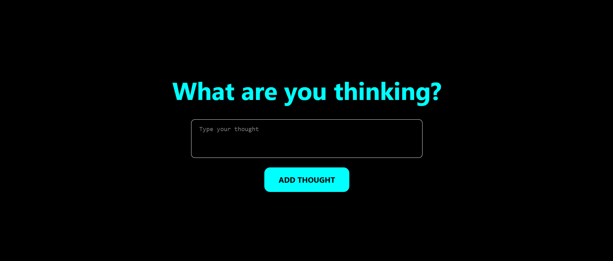
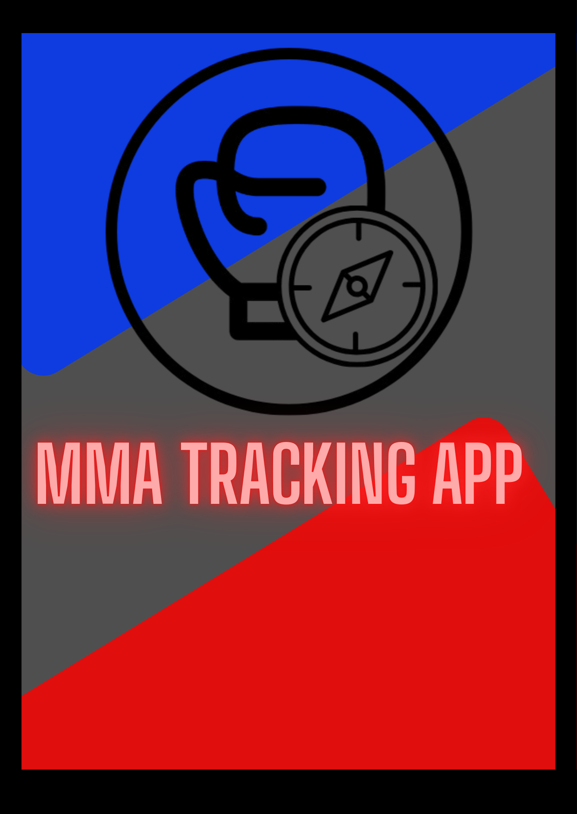

I’m a software developer with a knack for picking things apart—whether it’s a messy
webpage or a friend’s unpredictable Tuesday habits. My journey started with one
question: “Can I learn to code on my phone?” The answer was yes… mostly. A laptop
definitely helps, but that first step was pure phone power.
I turn ideas into clean, functional, and striking web experiences. From small business
sites to custom CMS setups, I help brands level up their digital presence. I love the
"puzzle" aspect of development—debugging, problem-solving, and making complex
systems feel simple.
When I'm not coding, I’m usually training in MMA, Muay Thai, or grappling. I’m also big on
improv and singing. I believe that a diverse life outside of tech makes me a more
adaptable, creative developer.





Each website is designed to help attract clients, showcase your work and build your empire in the digital world.
During the process of making the website, you will be updated on progress and be asked feedback on key decisions.
I hand you the keys to your site by giving you the power to edit it without ever touching any code.


Creating a dark, edgy, yet professional look that remains readable and accessible.
When designing the landing page, I made two separate style sheets to ensure
responsiveness across mobile and desktop. Additionally, I added a few details to the
desktop version to take advantage of the extra space. When choosing the colors, I
wanted to give a futuristic yet professional and trust invoking aesthetic.
A clean, responsive website, with careful design decisions to ensure everything looks
aesthetically pleasing, clear and structured.

Giving the opportunity for clients to quickly edit the content of their page like colors and text
without the need to contact the developer.
When you click an element on the preview page, the web app gives you the option to edit the
text, and color of said element. Once you click confirm on your changes, the web app saves
said changes into a list of individual changes to the webpage. Once the user clicks on the save
button, the local changes from the web app gets saved to a database that is later called as a list
of changes when entering the landing page.
A web app where the user can save time to make quick, simple edits to their page.

Managing state and understanding the lifecycle of a React component for the first time.
While working on this project, I took the time to learn how to make dynamic updates to the page
through UseState which is to handle user interactions within inputs and useEffect which handles
event listeners, ensuring that functions run precisely when they need to.
A neat, simple introduction into the react framework, allowing me to build more efficiently.